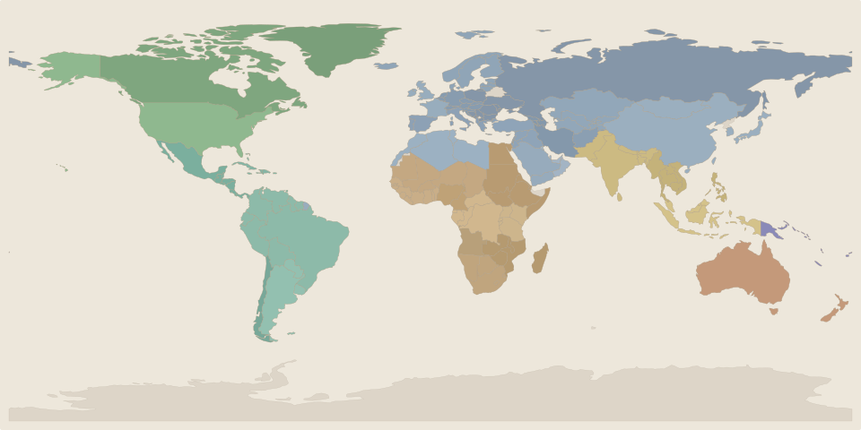

Today we pray for Aotearoa New Zealand
Friday 24 July 2026 · Australasia
Every place on this map has families like yours — parents and children, grandparents and neighbours. Some of them are having a very hard time right now. When we learn about their lives, we can pray for them by name and know what they really need.

Each coloured region has a family prayer briefing
Places We Pray For
Afrotropic
Palearctic
Indomalaya
Neotropic
Nearctic
For Parents and Carers
These briefings are designed for families with children aged 5–8 (and adaptable either side). Each one tells the story of a real place — what grows there, what people need, and what is hard right now. There is an activity you can do together, prayers you can say aloud, and a question to talk about at the table.
The information comes from the same data sources used by aid workers and journalists — UN agencies, human rights organisations, and environmental monitors — but told in words a child can understand, with adult notes where you need more context.